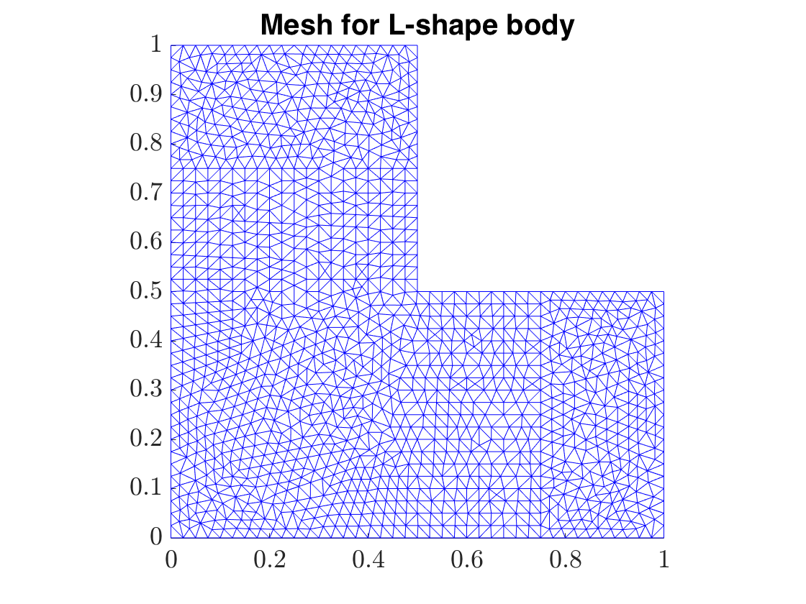
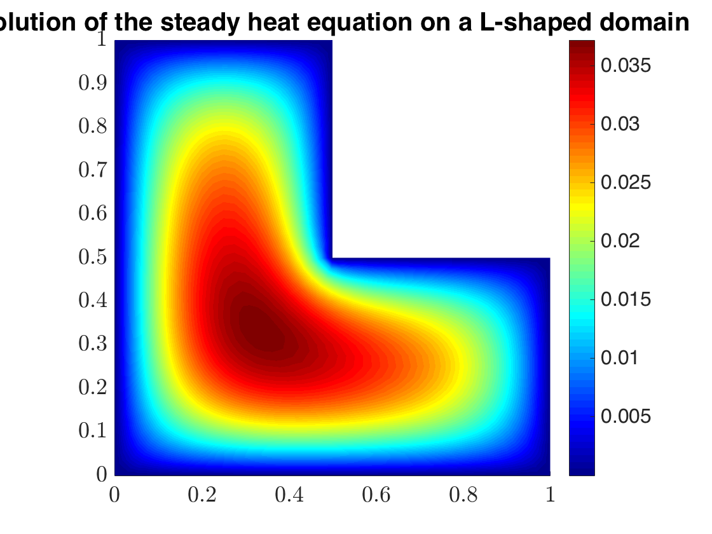
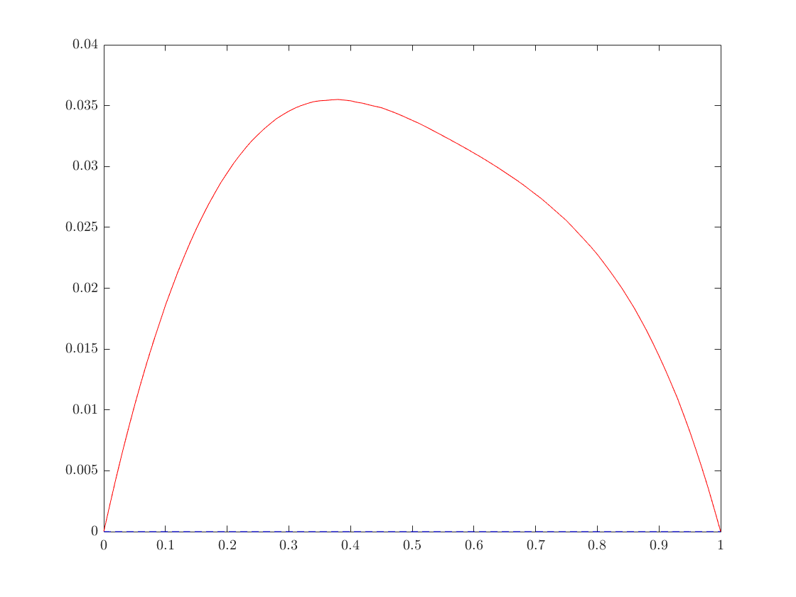
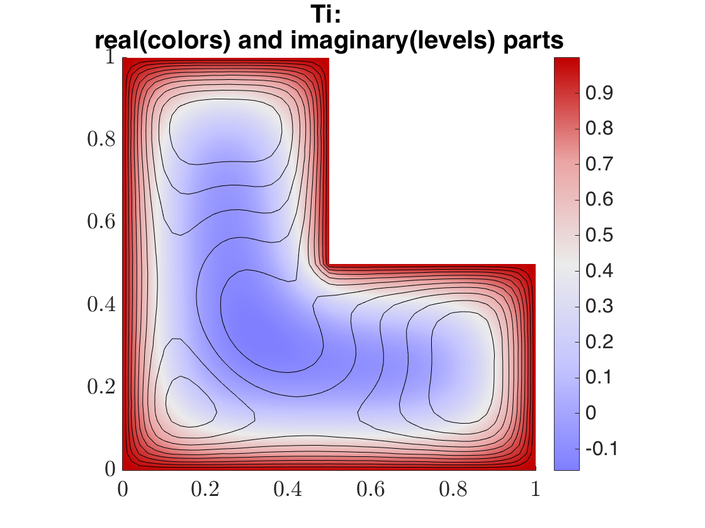
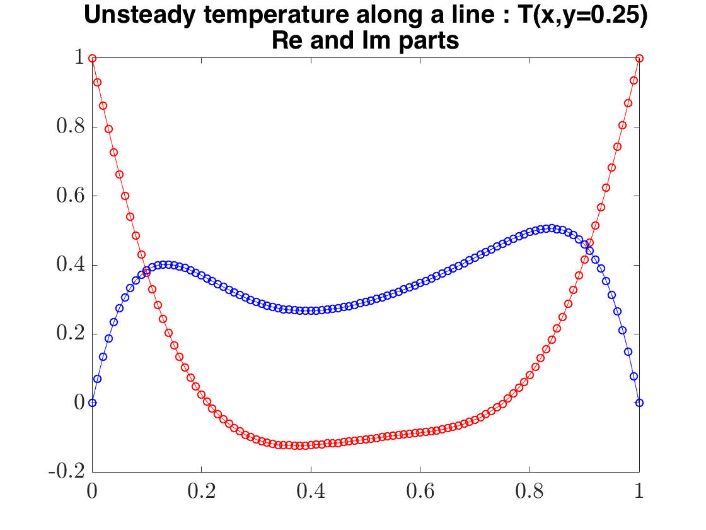

This script is a basic example which illustrates the main functionalities of the StabFem Software
Resolution of the steady and unsteady heat equation on a L-shaped domain
Contents
Initialization
clear all; close all; run('../../SOURCES_MATLAB/SF_Start.m');ffdatadir = './';verbosity=0; mkdir('FIGURES');
Generation of the mesh
Ndensity =40; ffmesh=SF_Mesh('Lshape_Mesh.edp','Params',Ndensity)
ffmesh =
DataDescription: '(Auxiliary file with information on initial mesh)'
datatype: 'Mesh'
meshtype: '2D'
np: 1426
nt: 2690
problemtype: 'EXAMPLE'
R: 1
InitialMeshDensity: 40
points: [3x1426 double]
bounds: [3x160 double]
tri: [4x2690 double]
nbe: 160
labels: 1
filename: '././mesh.msh'
seg: []
meshgeneration: 0
%Plot the mesh figure();SF_Plot(ffmesh,'title','Mesh for L-shape body'); set(gca,'FontSize', 18); saveas(gca,'FIGURES/Lshape_Mesh','png'); pause(0.1);
First problem : steady conduction
% Solves the problem with ff++ and imports the results SF_Launch('Lshape_Steady.edp','Mesh',ffmesh); heatS=importFFdata(ffmesh,'Data.ff2m')
heatS =
mesh: [1x1 struct]
filename: './Data.txt'
DataDescription: 'Temperature in a L-Shape domain'
datatype: 'EXAMPLE'
datastoragemode: 'ReP1'
T: [1426x1 double]
Plot the temperature field
figure();SF_Plot(heatS,'T','title', 'Solution of the steady heat equation on a L-shaped domain'); set(gca,'FontSize', 18); saveas(gca,'FIGURES/Lshape_T0','png');
Extract the field along a 1D line
Ycut = 0.25;Xcut = [0:.01:1];
Tcut = SF_ExtractData(heatS,'T',Xcut,Ycut);
plot this 1D line
figure();plot(Xcut,real(Tcut),'r-',Xcut,imag(Tcut),'b--'); pause(0.1);
Second problem : unsteady conduction
Solves the problem with FF++
heatU=SF_Launch('Lshape_Unsteady.edp','Params',100,'Mesh',ffmesh,'DataFile','Heat_unsteady.ff2m'); % plot the results figure();SF_Plot(heatU,'Tc.re','contour','Tc.im','cstyle','patchdashedneg','colormap','redblue','title',{'Ti: ' , 'real(colors) and imaginary(levels) parts'}) set(gca,'FontSize', 18); saveas(gca,'FIGURES/Lshape_Tc','png');
ans = 4x1 graphics array: ColorBar Patch Contour Contour
temperature field along a single line : first method (interpolation is done inside FF++)
heatUCut = importFFdata('HeatU_1Dcut.ff2m'); % Second method : interpolation is done in matlab using SF_ExtractData Ycut = 0.25;Xcut = [0:.01:1]; TIcut = SF_ExtractData(heatU,'Tc',Xcut,Ycut); % plot and compare the two methods figure; plot(Xcut,real(TIcut),'r',Xcut,imag(TIcut),'b'); hold on; plot(heatUCut.Xcut,real(heatUCut.Tcut),'ro',heatUCut.Xcut,imag(heatUCut.Tcut),'bo'); title({'Unsteady temperature along a line : T(x,y=0.25)', 'Re and Im parts'} ); set(gca,'FontSize', 18); saveas(gca,'FIGURES/Lshape_T0_Cut','png'); hold on; % % % Here is how to do data extraction in Matlab using the SF_ExtractData function % Ycut = 0.25;Xcut = [0:.01:1]; % TIcut = SF_ExtractData(heatU,'Tc',Xcut,Ycut); % figure();plot(Xcut,real(TIcut),'r-',Xcut,imag(TIcut),'b--'); % % % Here is how to do data extraction directly in the FreeFem program and import the corresponding data from a .txt file (see Lshape_Unsteady.edp). % heatCutI = importFFdata('HeatU_1Dcut.ff2m'); % plot(Ycut,real(TIcut','r',Ycut,imag(TIcut),'b'); % hold on; % plot(heatCut.Xcut,real(heatCutI.Tcut),'ro',heatCutI.Xcut,imag(heatCutI.Tcut),'bo'); % title({'Unsteady temperature along a line : T(x,y=0.25)', 'Re and Im parts'} ); % set(gca,'FontSize', 18); saveas(gca,'FIGURES/Lshape_T0_Cut','png'); % hold on;